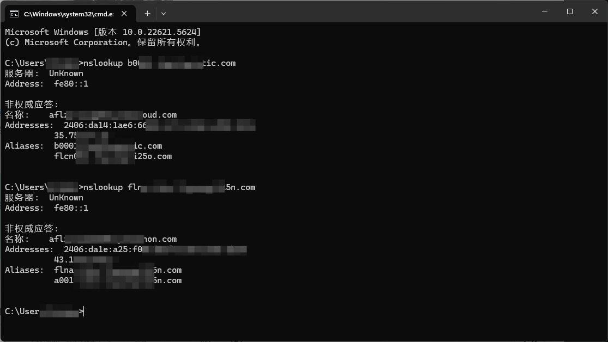
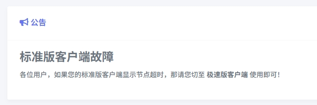
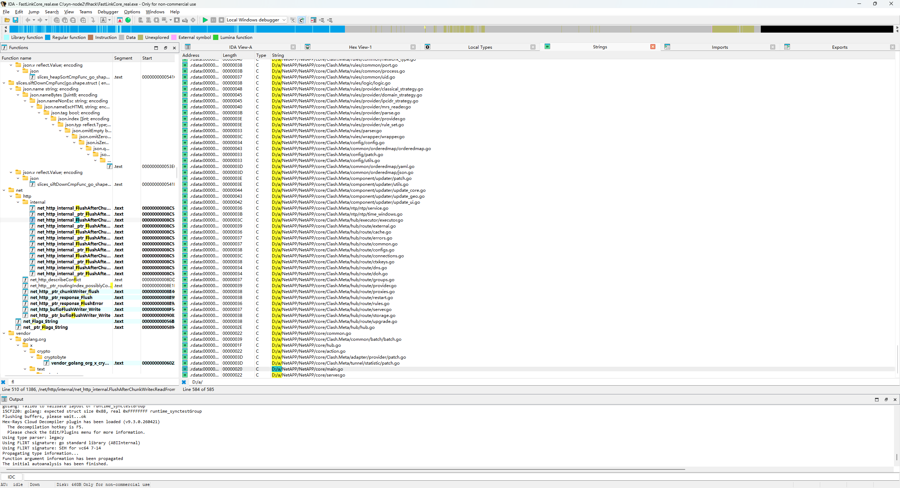

已成功hook出标准配置文件，并成功在v2rayN上使用
不过现在可能标准版客户端的问题貌似是修好了，两个延迟测试结果也分不出谁优谁劣，总之各有千秋
哎，这服务商咋给两个客户端用俩不同的入口捏，不过这下我可以在一个客户端里面集齐两种入口了哈哈哈哈

不过现在可能标准版客户端的问题貌似是修好了，两个延迟测试结果也分不出谁优谁劣，总之各有千秋
哎，这服务商咋给两个客户端用俩不同的入口捏，不过这下我可以在一个客户端里面集齐两种入口了哈哈哈哈



今天发现从专用客户端拉出来的配置文件不稳了，一看标准客户端故障，要求切换到他们新搞的极速版
本想着故技重施劫持核心获取极速版下发的特供配置文件
但是发现极速版的核心是魔改的mihomo，底层直接被魔改了，所有获取配置的操作都交给核心执行，不泄露配置文件
那别怪我开静态分析了 https://t.co/xgFKFL8NeO
本想着故技重施劫持核心获取极速版下发的特供配置文件
但是发现极速版的核心是魔改的mihomo，底层直接被魔改了，所有获取配置的操作都交给核心执行，不泄露配置文件
那别怪我开静态分析了 https://t.co/xgFKFL8NeO